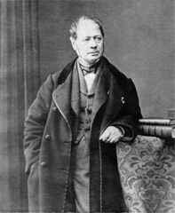
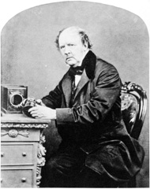
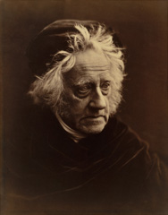
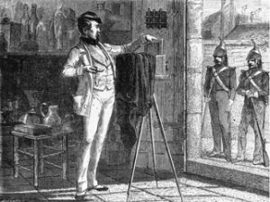
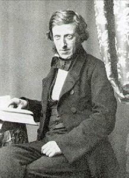
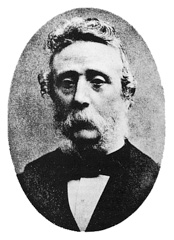
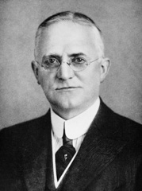

-
History of photography
-
Hippolyte Bayard

-
William Henry Fox Talbot

-
John Herschell

-
Hippolyte Fizeau
-
Abel Niepce de Saint-Victor

-
Scott Archer

-
Richard Maddox et Charles Bennet

-
Georges Eastman

-
How it has evolved
-
The first permanent images
-
Daguerreotype
-
emulsion plates
-
dry plates
-
The wonder of instant images
-
Advanced Image Control
-
Presentation of smart cameras
-
digital age
The first photographic or heliographic procedure was invented by Niépce around 1824.
The images were obtained with Judean bitumen, spread on a silver plate , after an exposure time of
several days.
In 1829, Niépce associates Louis Jacques Mandé Daguerre in his research.
In 1832, using the residue from the distillation of lavender essence, they perfected a second procedure
that produced
images with an exposure time of a whole day.
Niépce died in 1833. Daguerre continued to work alone and in 1838 invented the daguerreotype,
the first procedure that included a development stage. A silver plate covered with a thin layer of
silver iodide was
exposed in a darkroom and then subjected to the action of mercury vapors that caused the appearance of
an invisible latent image,
formed during exposure to light.
This development consisted of a great amplification of the effect of light, with which the exposure time
did not exceed 30 minutes.
The fixation was obtained by immersion in water, saturated with marine salts.
In July 1839, another Frenchman, Hippolyte Bayard, discovered the means of obtaining positive
images directly on paper.
A silver chloride-coated paper was darkened in light and then exposed in a darkroom after being
impregnated with silver iodide.
Exposure time was thirty minutes to two hours.
Still in 1839, the announcement of the invention of the daguerreotype prompted the Englishman
William Henry Fox
Talbot to resume the interrupted research whose beginnings dated back to 1834. In 1841, he
patented the calotype,
the first negative/positive procedure that allowed the multiplication of the same image thanks
to obtaining an
intermediate negative on a silver chloride paper, rendered translucent thanks to wax. As with
the daguerreotype,
the latent image was then developed by means of a chemical product, the developer: a solution of
gallic acid and silver nitrate.
A second sheet of paper also coated with silver chloride was later exposed through the
translucent negative, to give the final positive.
In 1839 John Herschell is credited with discovering the means to fix images, immersing them in a
sodium hyposulfite bath,
the same essential component of current photographic fixers. The advantages of the calotype
rested mainly on the ease of
handling copies on paper and the possibility of multiple reproduction. In return, the
definition, limited by the presence
of the fibers of the negative paper, could not compete with the daguerreotype.

To further reduce the exposure time, short focal length lenses were created, which were
brighter,
therefore preserving sharpness throughout the image. In 1841, the physicist Fizeau replaced
silver iodide with silver
bromide, whose sensitivity to light is much higher. Nothing more than a few seconds of exposure
was enough to obtain
a daguerreotype. Then taking portraits became possible.
In order to improve the transparency of the negative calotype, Abel Niépce de Saint Victor,
Niépce's cousin, discovered in 1847 the way to replace paper with glass . In order for silver
bromide to adhere to glass, he had the idea of mixing it with albumen (the white of the egg).
Although somewhat contrasty, the images became extremely precise, forcing opticians to fine-tune
even more efficient lenses.
In 1851, the Englishman Scott Archer replaced albumin with collodion, which is based on
guncotton.
The black and white images obtained by this procedure reached a quality never before obtained.
With
the drawback, that the shot had to take place while the plate was still wet and that the
development
had to be carried out immediately afterwards.
In 1871, another Briton, Richard Meaddox, remedied this problem by replacing collodion with
gelatin,
a procedure perfected by Charles Bennett who showed that gelatinized plates became highly
sensitive when kept
for several days at 32°C. Gelatin plates -bromide not only could they be stored before use, but
their sensitivity
was such that the exposure did not exceed a fraction of a second.
For this reason, shortly before 1880, the history of the shutter began , because the high
sensitivity of
the plates required the conception of mechanisms capable of letting light into the camera for
only one
hundredth and even one thousandth of a second. The intensity of light had to be accurately
evaluated and thus
the photometer became a true measuring instrument.
Photography still lacked color reproduction. The first attempts were the initiative
of Edmond Becquerel in 1848, then that of Niépce de Saint Victor, in 1851, who
demonstrated that a silver plate coated with pure silver chloride reproduced colors
directly, although in an unstable manner.

The basic concept of photography has been around since the 5th
century BCE. C. This art was born in the 11th century when an Iraqi
scientist developed something called "the camera obscura".
Even then, the camera didn't actually record images, it just
projected them onto another surface. The images were also upside
down, although they could be traced to create accurate drawings
of real objects such as buildings.
he first camera obscura used a hole in a tent to project an image
from the outside of the tent into the dark area. It wasn't until
the 17th century that the camera obscura became small enough to be
portable. Basic lenses for focusing light were also introduced
around this time.
Photography, as we know it today, began in the late 1830s in France. Joseph Nicéphore Niépce used a portable camera obscura to expose a bitumen-coated pewter plate to light. This is the first recorded image that did not fade quickly. Niépce's success led to a series of other experiments, and photography progressed very rapidly. Daguerreotypes, emulsion plates, and wet plates were developed almost simultaneously in the mid to late 1800s. With each type of emulsion, the photographers experimented with different chemicals and techniques. The following are the three that were instrumental in the development of modern photography:
Niépce's experiment led to a collaboration with Louis Daguerre.
The result was the creation of the daguerreotype, a precursor
to modern cinema.
A copper plate was coated with silver and exposed to iodine
vapor before being exposed to light.
To create the image on the plate, the first daguerreotypes
had to be exposed to light for up to 15 minutes.
The daguerreotype was very popular until emulsion plates
replaced it in the late 1850s.
Emulsion plates, or wet plates, were less expensive than daguerreotypes
and only required two to three seconds of exposure time. This made them
much more suitable for portrait photography, which was the most common
use of photography at the time. Many Civil War photographs were produced
on wet plates.
These wet plates used an emulsion process called the collodion
process, rather than a simple coating on the imaging plate. It
was during this time that bellows were added to cameras to aid
in focusing.
In the 1870s, photography took another big step forward. Richard Maddox
improved upon an earlier invention to make dry gelatin plates that were
almost equal to wet plates in speed and quality.
These dry plates could be stored instead of being manufactured on an
as-needed basis. This gave photographers much more freedom in taking
pictures. The process also allowed for smaller cameras that could be
held in the hand. As exposure times decreased, the first camera with
a mechanical shutter was developed.

At the same time that 35mm cameras were becoming popular, Polaroid
introduced the Model 95. The Model 95 used a secret chemical process
to develop the film inside the camera in less than a minute.
T his new camera was quite expensive but the novelty of instant images
caught the attention of the public. By the mid-1960s, Polaroid had
many models on the market, and the price had come down so that even
more people could afford it.
While the French introduced the permanent image, the Japanese made
it easier for the photographer to control the image. In the 1950s,
Asahi (which later became Pentax) introduced Asahiflex and Nikon
introduced its Nikon F camera. Both were SLR-type cameras, and the
Nikon F allowed for interchangeable lenses and other accessories.
In the late 1970s and early 1980s, compact cameras were introduced that were capable of making image control decisions on their own. These point-and-shoot cameras calculated shutter speed, aperture, and focus, allowing photographers to focus solely on composition.
In the 1980s and 1990s, various manufacturers worked on cameras that
stored images electronically. The first were point-and-shoot cameras
that used digital media instead of film.
By 1991, Kodak had produced the first digital camera advanced
enough to be used successfully by professionals. Other manufacturers
quickly followed and today Canon, Nikon, Pentax offer digital reflex
(DSLR) cameras.
So far, we have shown you the evolution of photography.
Compared to camera obscura or metal plates, we have definitely
come a long way. We hope this brief synopsis motivates you to
continue advancing your photography career!